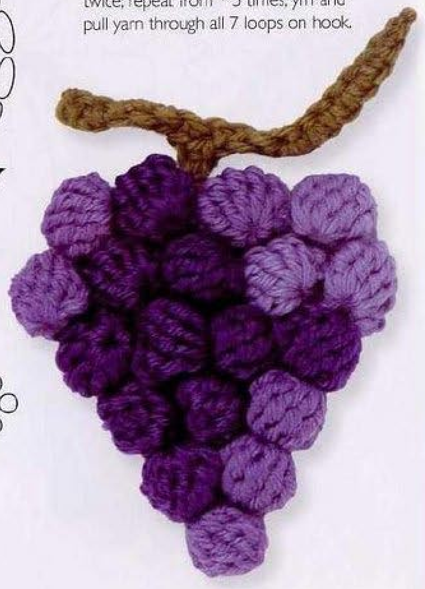
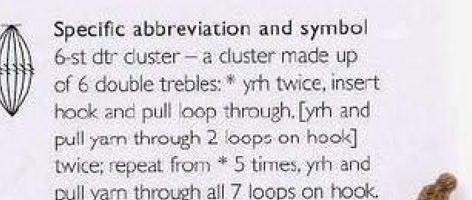
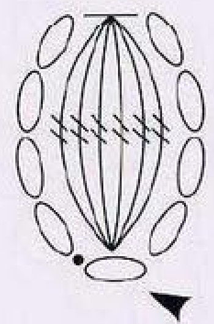
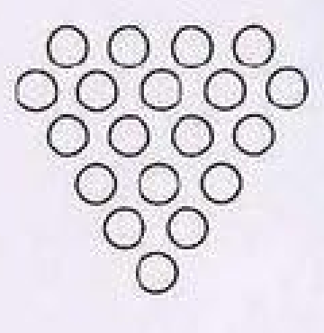
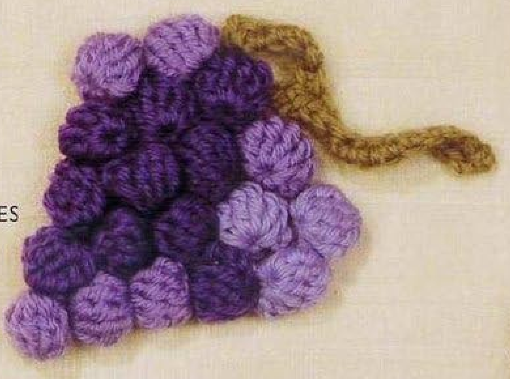

Crochet Grapes is assembled from nineteen rounded purple components and a separately made olive stem. Each grape uses a six-stitch tall cluster with a short chain return closing behind it. The pieces are then sewn into the source’s six-row bunch arrangement. This guide follows pattern 58 in Lesley Stanfield’s 100 Flowers to Knit & Crochet, preserving its cluster definition and assembly in US crochet terms.

Key Takeaways
- Use DK wool in shades of purple A and olive B.
- Make nineteen separate grapes, each from a five-chain start and a six-US-treble cluster.
- Pull the cluster tight with its smooth right side outside, then return to its base from the back.
- Make an eighteen-chain main stem with a five-chain side branch.
- Sew grapes into rows of 1, 2, 3, 4, 5, and 4, following the original diagram.
- Vary stitch direction and attach the stem’s shortest branch behind the bunch.
CROCHET GRAPES PATTERN
Project: One sewn bunch of nineteen crochet grapes with a separate branching stem. This entry appears among the source’s intermediate designs. The recipe is translated into US terms; hook, gauge, yardage, and finished dimensions are not specified.
| Skill level | Intermediate designs in the source. Practical guidance: familiarity with tall clusters and sewing multiple small components is helpful. |
|---|---|
| Base size | One bunch with 19 grapes. Finished dimensions are not specified. |
| Yarn | DK wool in shades of purple A for the grapes and olive B for the stem. |
| Quantity, hook, gauge | Not specified. Choose a hook suited to the wool and assess one grape before making the full set. |
| Notions | Scissors and a blunt needle for component sewing and invisible stem finishing. |
| US abbreviations | ch = chain; sc = single crochet; tr = treble; sl st = slip stitch; RS = right side. UK dc = US sc; UK dtr = US tr. |
| Six-tr cluster | For each partial stitch: yarn over twice, insert into the indicated chain, draw up a loop, then draw through 2 loops twice, leaving the stitch unfinished. Work this 6 times in the same base. Yarn over and draw through all 7 loops on the hook. |
| Grape, make 19 | With A, ch 5. Skip 4 chains and make a six-tr cluster in the next chain. Pull the yarn tight so the stitches curve with the smooth side, RS, outside. Ch 4; from the back, sl st into the chain at the cluster base. Fasten off. |
| Stem | With B, ch 18. Skip 1 chain and sc in each of the next 6 chains. Ch 5, skip 1 chain, and sc in each of the next 4 branch chains. Work sc in each of the remaining 11 original main-stem chains. Fasten off invisibly. |
| Making up | Sew the grapes in the diagram’s formation of 1, 2, 3, 4, 5, and 4, varying the direction of the stitches. From the pointed bottom upward, those six rows contain 19 grapes. Attach the shortest stem branch behind the bunch. |
Understand the Nineteen Separate Grapes
This bunch is not worked as one large circular piece with purple bobbles added across it. Each grape is made separately, fastened off, and later sewn into the arrangement. Its rounded surface comes from a six-stitch cluster pulled into a curved form, followed by a chain return attached at the base from behind.
The source specifies nineteen grapes and a formation of one, two, three, four, five, and four pieces. The diagram places the one-grape row at the pointed bottom and the four-grape row at the top. Their sum is nineteen. Keeping this arrangement visible during sewing avoids improvising a larger bunch from extra pieces.
A separate olive stem is worked from an eighteen-chain foundation with a five-chain branch introduced partway along the return. The shortest branch is sewn behind the bunch. The finished photograph shows the two longer arms emerging above the grapes, while the small attachment branch is concealed behind them.
Materials, Shades, and a Sample Grape
Use DK wool in shades of purple for A and olive for B. The plural purple shades in the source allow the bunch to mix lighter and deeper grapes. Keep their yarn thickness comparable so the rounded pieces fit together without one shade consistently producing much larger components.
The entry does not give a hook size, gauge, yarn quantity, or measured finished size. Choose a hook suited to your wool and make one grape as a construction sample. Examine whether its cluster columns curve neatly and its back return closes comfortably. That small test is useful before repeating the piece eighteen more times.
Prepare scissors and a blunt needle for the sewing stage. You can keep the finished components in rows or small labeled groups to track the nineteen-piece total. Leave usable ends for securing and assembly; the source does not specify an exact tail length, so retain enough yarn to work comfortably.
US Terms and the Six-Stitch Cluster
The book’s UK double treble becomes US treble. A complete US treble normally begins with two yarn overs and has three draw-through-two movements after the loop is drawn up. In this cluster, each partial treble stops after two such movements, leaving one unfinished top for the shared closing step.
Yarn over twice, insert into the designated base chain, draw up a loop, and draw through two loops twice. Repeat that partial-stitch sequence six times in the same base. After all six partial trebles, there are seven loops on the hook: the initial working loop and one retained loop for each partial stitch.
Yarn over and draw through all seven loops to close the cluster. This joins the six tall columns at their top while they also share a single chain base. It is different from a popcorn, which completes separate tall stitches before gathering them by removing and reinserting the hook.
Cluster checkpoint: Six partial US trebles share one base and close through seven loops. Do not make six full trebles and use a popcorn closure instead.

Step 1: Start the First Purple Grape
With purple A, chain five. Skip the four chains nearest the hook and work the six-treble cluster into the remaining chain. That one working chain is the shared base for all six partial stitches. The skipped four-chain section provides the tall opening route alongside the cluster.
Count the partial stitches as you make them. Each begins with two yarn overs and stops after drawing through two loops twice. Keep the retained loops on the hook until all six partial stitches have been worked. Closing after five because the hook feels crowded leaves a different component.
After the sixth partial stitch, verify seven loops and draw through them together. Work slowly enough that the closing yarn passes through every loop cleanly. If a retained loop catches or drops, restore it before tightening the group rather than pulling the yarn through an incomplete set.
Step 2: Curve the Cluster with the Right Side Outside
Pull the yarn tight so the stitch group curves with the smooth side, the right side, outside. This is the source’s shaping instruction immediately after the cluster closure. It gives the grape its rounded appearance without requiring a separate ball pattern, a stuffing step, or another round of increases.
Inspect the six columns as the cluster curves. They should remain gathered at the shared top and base, with the smoother face outside. Avoid pulling so forcefully that the foundation chain distorts or a tall column disappears inside an overly tight knot. The sample grape helps establish comfortable handling.
Keep the cluster base identifiable. The next step returns to the chain at that base from the back, so do not fasten off as soon as the front looks rounded. The four-chain return is part of the original grape construction and helps complete the small component.

Step 3: Close Back to the Grape Base
Chain four after shaping the cluster. From the back, slip stitch into the chain at the cluster base, then fasten off. The return is attached behind the curved group, not worked across its smooth front or into a neighboring column’s top.
Keep the four-chain return behind the grape so it does not appear as a loose loop across the visible surface. The source does not ask you to work additional stitches into this return chain or create a second cluster. One initial cluster and one four-chain back return make the whole grape.
Tidy the ends while leaving enough yarn for the chosen sewing approach. Check that the grape retains its smooth outside face and that its back connection is secure. No stuffing, measured diameter, or special pressing instruction is supplied for these pieces in the entry.
Step 4: Make Eighteen More Grapes
Repeat the same recipe until there are nineteen finished grapes. Use the source’s shades of purple in an arrangement you can assess visually, while keeping the construction identical for each component. The entry does not prescribe an exact number in each shade, so do not invent a mandatory light-to-dark ratio.
Compare the five-chain starts, six partial stitches, and four-chain returns as you work. A correctly counted piece can still look slightly different if its cluster was pulled more tightly than its neighbors. Gentle positioning may resolve handling differences, but a missing partial stitch should be corrected directly.
Count completed grapes separately from loose yarn ends or an unfinished sample. Organize them into the six row groups before sewing: one, two, three, four, five, and four. This provides an immediate nineteen-piece check and makes it easier to follow the diagram without losing track midway through assembly.
Component checkpoint: The recipe calls for nineteen grapes, not nineteen clusters plus an extra sample added to the bunch. Reuse a correct sample as one of the nineteen if desired.
Step 5: Begin the Olive Main Stem
With olive B, chain eighteen. Skip the chain nearest the hook and work US single crochet into each of the next six chains. These are complete singles, rather than the slip-stitch returns used in some other stems in the book. Keep the remaining original foundation chains available for the later main-stem return.
Count six singles before creating the side branch. Their location determines where the shorter branch meets the main foundation. Working seven or eight before branching changes the shape even if the total chain count was correct. A temporary marker can distinguish the last worked main-chain position from the active loop.
The main foundation will ultimately use one skipped chain, these six singles, and eleven further singles. That totals eighteen. Do not count the branch chains as part of the original eighteen-chain foundation; they are introduced separately during the return.
Step 6: Make the Five-Chain Branch and Complete the Stem
Chain five from the active loop. Skip one of those new chains and single crochet in each of the next four branch chains, returning to the main stem. This produces the short branch that the source later attaches behind the grape bunch.
Resume working into the original main-stem foundation and single crochet in each of its remaining eleven chains. Do not continue into the four new branch singles as though they were the unused main chains. The two routes are separate: the branch has its own return, followed by the remainder of the original foundation.
Fasten off invisibly. Arrange the branching stem and compare the three arms. The short branch is the attachment portion; the two longer main-foundation sections can emerge above the bunch. No separate leaf is part of this entry, and the source does not add a second branched stem.
Count the Main Stem Independently of the Branch
The eighteen-chain main foundation uses one skipped chain, six first-section singles, and eleven final singles. The five-chain branch adds four return singles of its own. Keeping those counts separate prevents the branch from consuming main-foundation positions.
Step 7: Lay Out the Original Six-Row Formation
Place the grapes with their smooth right sides visible and arrange the six rows shown in the diagram. From the pointed bottom upward, use one grape, then two, three, four, five, and finally four at the top. The widest five-grape row sits just below the upper four-grape row.
Vary the direction of the stitches as the source directs. Rotate individual grapes so the curved stitch columns do not all line up identically. This changes their orientation in the sewn arrangement, not their cluster count or their right-side-out construction. Keep the smoother face outside as each piece is positioned.
Compare the layout with the source photograph and diagram before sewing. Slightly offset neighboring rows as shown so the bunch reads as a joined group with a pointed tip. Avoid adding another grape to fill every visible gap; the prescribed formation already defines the component total and outline.

Step 8: Sew the Bunch and Attach the Stem
Sew the grapes together in the laid-out formation, retaining the varied stitch directions. Use stable parts of the components for attachment and keep the sewing on the back where practical. The entry gives no exact sewing stitch count, so inspect each connection for security while maintaining the intended shape.
Attach the shortest branch of the olive stem behind the bunch. Position it at the upper area so the two longer arms remain visible above the purple grapes as in the source example. Do not sew a longer visible arm across the front simply to conceal its end.
Inspect the front and back before trimming the last ends. The six-row formation should remain recognizable, each grape should retain its rounded surface, and the stem should be firmly attached behind the group. A gentle handling check can reveal a loose grape or stem connection while sewing yarn remains available.

Troubleshoot Clusters and the Sewn Arrangement
A grape is flat or open
Check its six partial trebles and seven-loop closure, then the source instruction to pull the group into a curve with the smooth face outside. Review the four-chain return attached from behind. Substituting a flat fan or omitting the back return gives a different construction.
There are too few grapes for the rows
The row sum is nineteen: 1 + 2 + 3 + 4 + 5 + 4. Recount completed components before changing the diagram. A sample set aside or an unfinished piece can explain the shortage. The correct response is to complete the nineteen-piece set rather than remove a row from the original arrangement.
The stem branch is misplaced
The five-chain branch is introduced after six singles on the original foundation, then followed by eleven main-chain singles. It is the shortest branch and belongs behind the bunch. Recheck those routes if the attached stem appears to have only one visible arm or an unusually long attachment strand.
Optional Shades, Sizing, and Decorative Placement
The source asks for shades of purple, so you can distribute lighter and darker grapes without changing the recipe. Keep their wool thickness comparable and vary their stitch directions during sewing. A different fruit color, extra leaf, or altered component number is a personal adaptation rather than the supplied Grapes pattern.
Changing yarn weight or hook can change overall dimensions, but no graded sizes or gauge formula is supplied. Test one grape and a small layout before planning a particular attachment area. Additional decorative suggestions include a fruit applique on a textile panel or bag, using stable back stitches to attach the completed bunch.
Variation guidance: Keep the nineteen-grape formation and shortest-branch attachment clear. Extra grapes, leaves, stuffing, or a new ball construction change the source recipe.
Grapes at a Glance
- Nineteen separate purple DK-wool grapes.
- Six partial US trebles closed through seven loops for each grape.
- Four-chain back return attached to the cluster base.
- Eighteen-chain olive stem with a five-chain branch.
- Sew six rows of 1, 2, 3, 4, 5, and 4, then attach the shortest branch behind.
Conclusion
Grapes combines one repeated cluster component with a clear sewing diagram and a branching stem. Check the six-stitch closure, keep the smooth face outside, and lay out all nineteen pieces before sewing. The compact card contains the complete source recipe in US terms, while the diagram preserves its bunch arrangement. Click the Pin to return to the pattern when you are ready to make it.
Source and Tags
Source: Lesley Stanfield, 100 Flowers to Knit & Crochet, pattern 58 Grapes. Instructions, cluster definition, grape chart, assembly diagram, and finished bunch are on printed page 76, PDF page 70; the directory example is on printed page 45, PDF page 40. Source photographs show completed bunches, not progress work. The recipe is translated into US terminology, with additional handling and use suggestions identified separately.
Crochet GrapesPurple Fruit MotifSix-Stitch ClusterDK WoolSewn AppliqueUS Crochet Terms